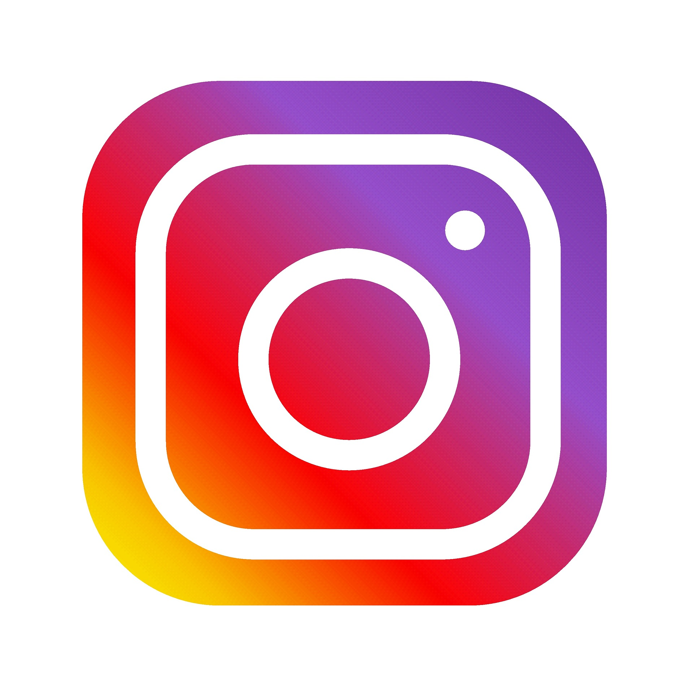
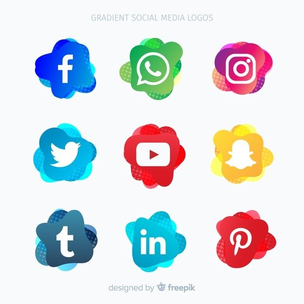

Les réseaux sociaux
-
Mon identité sur Internet
Je suis une personne qui passe beaucoup de temps sur les réseaux sociaux. Et qui dit réseaux sociaux dit compte et
donc information sur moi. Déjà quand on cherche mon nom ainsi que mon prénom on ne tombe sur des informations me concernant.
t dire que mon identité est un minimum protégé du public. Comment je fais ? Déjà tous mon réseaux sociaux on une adresse mail
différentes de mon adresse professionnelle , ensuite mes noms de profils ne contiennent pas d’information direct sur moi ,
cela peut être par des abréviation ou des caractères spéciaux au milieu. Ensuite tout mes comptes sont en privée les accès
à mes informations poster sur le compte sont donc restreinte au personnes que je souhaite autorisé. J’évite aussi de mettre
mon visage en photo de profil pour qu’on ne puisse pas me reconnaitre , je ne met pas d’information personnel dans la
biographie ou bannière d’accueil visible par tout le monde. Je fais attention au photo ou publication sur lesquelles
je peux être taguer. En faisant tous cela je protégé de maniéré relativement efficace mon images ainsi que mes données
personnels.
-

-
ATTENTION sur les réseaux
Même si j’essaie d’utiliser mes réseaux avec conscience je sais que ce n’est pas lac de tout le monde et c’est pour
cela qu’ils sont dangereux et d’être être beaucoup plus surveillé surtout pour la communauté des -16 ans.
J’ai personnellement commencé à utiliser les réseaux sociaux en fin de collège et je pense que mon utilisation a
l’époque aurait pu être dangereuse . Ils sont à la source de nouveau problème comme le cyberharcèlement est
bien d’autres. J’utilise donc mes réseaux avec un âge approprié et une sensibilisation au préalable pour limiter
les dégâts qu’ils peuvent causer.
Pourquoi les réseaux sociaux et lesquelles?
Il existe plusieurs types de réseaux sociaux , ceux pour communiquer comme discord ,WhatsApp Messenger…
et les autres réseaux sociaux ou ce qui est posté est public ce qui peut nuire à notre identité plus facilement .
Mon réseau social préféré restant Instagram , il permet de garder un anonymat de manière plus simple que d'autres réseaux
est à mon gout il y est plus simple de contrôler son image . Au contraire je pense que twitter est le réseau social le
plus dangereux pour soi et pour les autres .Les propos tenus sur ces réseaux deviennent facilement viraux et mène parfois
à des propos extrêmes envers une personne ou une communauté malgré quelque mouvement comme blacklivematter à mon gout
twitter peut bien facilement détruire une vie pour un simple twitte postée il a plusieurs années.
Ils permettent donc de communiqué et exprimer un avis en toute liberté , mais ils faut être consciencieux dans
le choix des réseaux que l’on souhaite utilisé et cela en fonction de nos besoins.


Mon rapport aux réseaux sociaux.
En prenant en compte la dangerosité des réseaux j’utilise les miens avec attentions. Instagram étant celui ou je passe le
plus de temps pour une raison. Tout comme TikTok ou bien d’autres Instagram me permet d’avoir un flux de publication vidéo
,photo constent et infinie. Cela permet de pallier l'ennuie mais aussi de ne pas réfléchir lorsque l’on ne veut pas penser.
En effet les publications étant personnalisé avec un algorithme les publications que je regarde sont en général a mon gout et
me permet de penser a autre chose si je le souhaite. Je passe aussi du temps sur les réseaux pour communiquer avec mes amies,
ils me permettent de rester en contact avec des personnes que je ne vois pas souvent.